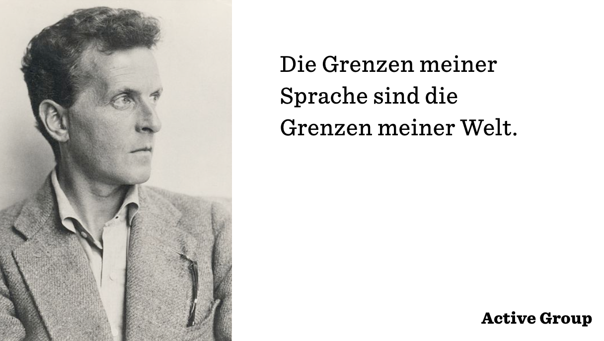

Language Oriented Programming
Kaan Sahin, Active Group GmbH
Created: 2024-01-30 Tue 11:25
Language Oriented Programming

If you give someone Fortran, he has Fortran. If you give someone Lisp, he has any language he pleases. —Guy L. Steele
Racket – Übersicht

- Lisp-Dialekt, dynamisch getypt
- ermutigt funktionale Programmierung
- besonders für Lehre geeignet
- funktionale Konzepte
- Sprache anpassbar
Racket – DrRacket

Racket – (Lisp-)Syntax
- Zwei Arten von Ausdrücken:
- Atomare Ausdrücke:
17,"Hallo",sym,#f - Forms:
(or false (> 2 1))
- Atomare Ausdrücke:
Racket – Syntax
- Zwei Arten von Ausdrücken:
- Atomare Ausdrücke:
17,"Hallo",sym,#f - Forms:
(or false (> 2 1))
- Atomare Ausdrücke:
zudem noch:
- eckige Klammern:
[1 2], u. a. incond
Racket – Syntax
3, "String", sym, true ;; Atomare Werte (* (+ 4 3) 2) ;; Integer, 14 (list 1 2 (+ 1 2) "Hi") ;; Liste, (1 2 3 "Hi") (if (> 2 3) "It is true" 100) ;; Integer, 100 (cond [(> 3 4) "nicht das Ergebnis"] [(= 3 3) "das Ergebnis"] [(> 3 2) "nicht das Ergebnis"]) ;; String, "das Ergbnis"
Racket – Syntax, Definitionen
(define pi 3.14159) (define (umfang radius) (* pi radius)) (define (factorial n) (if (= n 1) 1 (* n (factorial (dec n)))))
Motivation – Makros
Motivation – Makros
List Comprehensions
Python
[x * x for x in range(20) if x % 2 == 0]
Haskell
[x * x | x <- [1, 2, 3, 4], x > 2]
Motivation – Makros
Pattern Matching
Elixir
def fun(["Hi", name]), do: "What's up, " <> name <> "?" def fun(lis), do: "something else" case {1, 2, 3} do {1, 2, 4} -> "this won't match" {1, 2, x} -> x _ -> "if nothing else matches" end
Motivation – Makros
Weitere Schreiberleichterung:
- Getter-/Setter-Funktionen
- Wiederkehrende Definitionen / Umständlichkeiten
Spracherweiterung via Libraries:
- Concurrency-System
- DSLs
- Statisches Typsystem
- . . .
Racket – Evaluation
repl> (define (foo x y) (+ x y))
Racket – Evaluation
repl> (define (foo x y) (+ x y)) repl>
Racket – Evaluation
repl> (define (foo x y) (+ x y)) repl> (foo (+ 2 1) (+ 2 2))
Racket – Evaluation
repl> (define (foo x y) (+ x y)) repl> (foo (+ 2 1) (+ 2 2)) 7
Racket – Evaluationsschritte
(foo (+ 2 1) (+ 2 2))
Racket – Evaluationsschritte
(foo (+ 2 1) (+ 2 2)) ↝ (foo 3 (+ 2 2))
Racket – Evaluationsschritte
(foo (+ 2 1) (+ 2 2)) ↝ (foo 3 (+ 2 2)) ↝ (foo 3 4)
Racket – Evaluationsschritte
(foo (+ 2 1) (+ 2 2)) ↝ (foo 3 (+ 2 2)) ↝ (foo 3 4) ↝ (+ 3 4)
Racket – Evaluationsschritte
(foo (+ 2 1) (+ 2 2)) ↝ (foo 3 (+ 2 2)) ↝ (foo 3 4) ↝ (+ 3 4) ↝ 7
Racket – REPL
R EAD
E VAL
P RINT
L OOP
Kompilation – Read und Eval

Der Racket-Reader liest Text und gibt Datenstrukturen (syntax objects) zurück.
Der Evaluator nimmt Datenstrukturen (syntax objects) und evaluiert sie zu Werten.
Makros – syntax objects
Ein syntax object erzeugt man mit #` :
#`(foo (+ 2 1) (+ 2 2))
Makros – syntax objects
Ein syntax object erzeugt man mit #` :
#`(foo (+ 2 1) (+ 2 2)) ↝ #<syntax:intro.rkt:28:2 (foo (+ 2 1) (+ 2 2))>
Makros – syntax objects
Ein syntax object erzeugt man mit #` :
#`(foo (+ 2 1) (+ 2 2)) ↝ #<syntax:intro.rkt:28:2 (foo (+ 2 1) (+ 2 2))> (define variable 5) #`(foo (+ 2 1) variable) ↝ #<syntax:intro.rkt:28:2 (foo (+ 2 1) variable)>
Makros – syntax objects
Einzelnen Code innerhalb eines syntax objects wertet man mit #, aus:
#`(foo (+ 2 1) #,(+ 2 2))
Makros – syntax objects
Einzelnen Code innerhalb eines syntax objects wertet man mit #, aus:
#`(foo (+ 2 1) #,(+ 2 2)) ↝ #<syntax:intro.rkt:28:2 (foo (+ 2 1) 4)>
Makros – syntax objects
Einzelnen Code innerhalb eines syntax objects wertet man mit #, aus:
#`(foo (+ 2 1) #,(+ 2 2)) ↝ #<syntax:intro.rkt:28:2 (foo (+ 2 1) 4)> (define variable 5) #`(foo (+ 2 1) #,variable) ↝ #<syntax:intro.rkt:28:2 (foo (+ 2 1) 5)>
Makros – syntax objects
Live-Coding
Kompilation – Read und Eval
Der Racket-Reader liest Text und gibt Datenstrukturen (syntax objects) zurück.
Der Evaluator nimmt Datenstrukturen (syntax objects) und evaluiert sie zu Werten.
Kompilation – Read, Eval und Makroexpansion!

Kompilation – Read, Eval und Makroexpansion!
In der Makroexpansion werden Makroaufrufe getätigt.
Kompilation – Read, Eval und Makroexpansion!
Makros nehmen Datenstrukturen (syntax objects) entgegen und geben Datenstrukturen (syntax objects) zurück.
Makros
Makros nehmen Datenstrukturen (syntax objects) entgegen und geben Datenstrukturen (syntax objects) zurück.
Makros – Infix
Statt
(+ 2 1)
wollen wir
(2 + 1)
Makros – Infix
(define-syntax (infix form) ...)
Makros – Infix
(define-syntax (infix form) (syntax-parse form [(infix ...) ...]))
Makros – Infix
(define-syntax (infix form) (syntax-parse form [(infix stuff) ...]))
Makros – Infix
(define-syntax (infix form) (syntax-parse form [(infix (zahl1 op zahl2)) ...]))
Makros – Infix
(define-syntax (infix form) (syntax-parse form [(infix (zahl1 op zahl2)) #`(op zahl1 zahl2)]))
Makros – Infix
repl> (infix (2 + 1))
Makros – Infix
repl> (infix (2 + 1)) READER Datenstruktur: (infix (2 + 1))
Makros – Infix
repl> (infix (2 + 1)) READER Datenstruktur: (infix (2 + 1)) MAKROEXPANSION ↝ (infix (2 + 1)) ↝ #<syntax(+ 2 1)> [Datenstruktur!]
Makros – Infix
repl> (infix (2 + 1)) READER Datenstruktur: (infix (2 + 1)) MAKROEXPANSION ↝ (infix (2 + 1)) ↝ #<syntax(+ 2 1)> [Datenstruktur!] EVAL #<syntax(+ 2 1)> ↝ 3
String switch
https://docs.oracle.com/javase/8/docs/technotes/guides/language/strings-switch.html
" In the JDK 7 release, you can use a String object in the expression of a switch statement: "
public String getTypeOfDayWithSwitchStatement(String dayOfWeekArg) { String typeOfDay; switch (dayOfWeekArg) { case "Monday": typeOfDay = "Start of work week"; break; case "Tuesday": case "Wednesday": case "Thursday": typeOfDay = "Midweek"; break; ...
String switch

String switch
Wollen folgende Syntax implementieren
(define y "Work") (switch y [case "Holiday" -> "I am not around"] [case "Work" -> "How can I help?"])
String switch
(define y "Work") (switch y [case "Holiday" -> "I am not around"] [case "Work" -> "How can I help?"]) ↝ [MAKROEXPANSION] (cond [(eq? y "Holiday") "I am not around"] [(eq? y "Work") "How can I help?"])
String switch
Live-Coding
Domänenspezifische Sprachen
Domänenspezifische Sprachen
DSLs erleichtern Anwender:innen, Probleme mit sprachlichen Mitteln aus ihrem Expertenbereich zu lösen
Beispiele:
- SQL
- HTML und CSS
- LaTeX
- PlantUML
- Prolog
- …
Domänenspezifische Sprachen
PlantUML
@startuml (*) -up-> "Talk anhören" -right-> "begeistert sein" --> "Racket ausprobieren" -left-> (*) @enduml

Eigene Syntax für DSLs in Racket
Datenbank-DSL: Key-Value-Paare speichern, anfordern, ausdrucken
Eigene Syntax für DSLs in Racket
Datenbank-DSL: Key-Value-Paare speichern, anfordern, ausdrucken
SHOW-DB PUT "milk" 1.50 PUT "water" 1.00 x = GET "water" PRINT x SHOW-DB y = GET "milk" PRINT "Summe"
Eigene Syntax für DSLs in Racket
Live-Coding
Takeaways
Takeaways
- Makros sind ein mächtiges Werkzeug
Takeaways
- Makros sind ein mächtiges Werkzeug
- Racket ermöglicht es, Makros sehr einfach zu schreiben
Takeaways
- Makros sind ein mächtiges Werkzeug
- Racket ermöglicht es, Makros sehr einfach zu schreiben
- Syntax kann sehr einfach erweitert werden
Takeaways
- Makros sind ein mächtiges Werkzeug
- Racket ermöglicht es, Makros sehr einfach zu schreiben
- Syntax kann sehr einfach erweitert werden
- DSLs sind ein wichtiges Werkzeug
Takeaways
- Makros sind ein mächtiges Werkzeug
- Racket ermöglicht es, Makros sehr einfach zu schreiben
- Syntax kann sehr einfach erweitert werden
- DSLs sind ein wichtiges Werkzeug
↝ DSLs und Racket sind toll
Takeaways
- Makros sind ein mächtiges Werkzeug
- Racket ermöglicht es, Makros sehr einfach zu schreiben
- Syntax kann sehr einfach erweitert werden
- DSLs sind ein wichtiges Werkzeug
↝ DSLs und [Sprachen, die Makros unterstützen] sind toll
Wie gehts weiter?


- Schulung iSAQB DSL: Domänenspezifische Sprachen
- Weitere Schulungen:
- Einführung in die funktionale Programmierung
- iSAQB FOUNDATION; iSAQB FUNAR; iSAQB FLEX
- Blog: funktionale-programmierung.de
Wie gehts weiter? – OOP
Mittwoch, Mike Sperber und Henning Schwentner:
18:30 – 20:00: OO and FP Can’t Be Friends – Yet
Donnerstag, Mike Sperber und Alexander Lorz:
11:00 – 11:45: Qualityland of Confusion
Add-On – DSLs im Alltag
DSL für Eventverarbeitung
{:subject "Production.Equipment.Alarm.Report. WM23",
:data {CMD "ALARM_REPORT",
ALARM_STATE 1,
ALARM_ID 6977,
ALARM_TEXT "equipment door jammed"}}
(dsl/wait-for-event event
[(:subject #"Production).Equipment\.Alarm\.Report\..*" :as subject)
([:data CMD] "ALARM_REPORT" :as cmd)
([:data ALARM_STATE] 1 :as alarm-state)
([:data ALARM_ID] :as alarm-id)
([:data ALARM_TEXT] :as alarm-text)
(? [:data ALARM_SEVERITY] :as alarm-severity)]
(dsl/process-event (make-alarm alarm-id alarm-text alarm-severity)))
© Marcus Crestani, 2023
Add-On – DSLs im Alltag
Monadische Programme in Clojure
(defn ping-with-retries-m [tries timeout address] (if (<= tries 0) (monad/return false) (monad/monadic [response (ping-m timeout address)] (if response (monad/return response) (ping-with-retries-m (dec tries) timeout address)))))
© Marco Schneider, 2023
Add-On – DSLs im Alltag
Monadische Programme in Haskell
main = do printLine "Hallo, gib Deinen Namen ein: " eingabe <- readLine printLine "Hi, " ++ eingabe ++ ", wie gehts?"
Add-On – riposte
Riposte—Scripting Language for JSON-based HTTP APIs
by Jesse Alama <jesse@lisp.sh>
Riposte is a scripting language for evaluating JSON-bearing HTTP responses. The intended use case is a JSON-based HTTP API. It comes with a commandline tool, riposte, which executes Riposte scripts.
Add-On – riposte
#lang riposte ^Content-Type := "application/json" # set a base URL %base := https://api.example.com:8441/v1/ $uuid := @UUID with fallback "abc" GET cart/{uuid} responds with 2XX
Add-On – riposte
#lang riposte # Now add something to the cart: $productId := 41966 $qty := 5 $campaignId := 1 $payload := { "product_id": $productId, # extend JSON syntax: "campaign_id": $campaignId, # - use Riposte variables "qty": $qty # - add comments to JSON } POST $payload to cart/{uuid}/items responds with 200 $itemId := /items/0/cart_item_id # extract the item ID $itemId is an integer